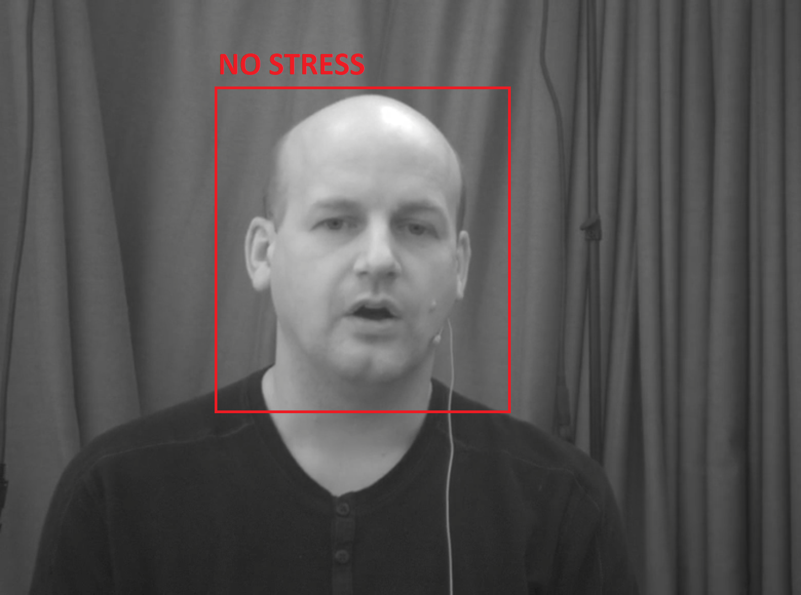
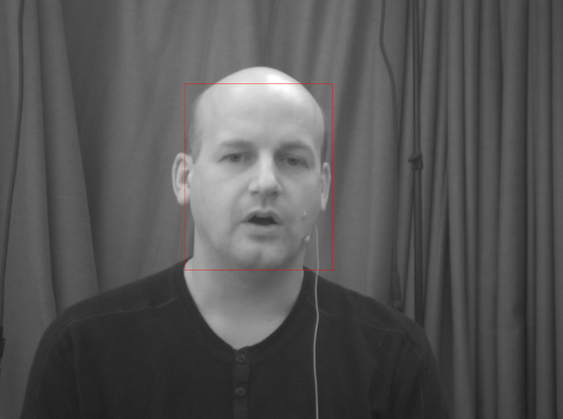

연세대학교에서 제공하는 OpenAPI이며, 사람 얼굴이 포함되어 있는 이미지를 입력으로 스트레스 인식 알고리즘이 예측한 사람의 스트레스 수준을 결과로 반환해주는 API입니다. 스트레스 수준은 스트레스 없음, 스트레스 약함, 스트레스 강함의 3단계로 구성되어 있습니다.
아래 그림과 같이 이미지에서 (1). 사람 얼굴(Face)을 검출하고, (2). 이미지 내 검출된 사람 얼굴의 스트레스 수준이 어느 정도인지를 인식(Recognition)하는 알고리즘입니다.

영상기반 스트레스 인식 API의 호출은 API를 서비스하는 서버 주소와 객체 검출을 위한 인자 값이 필요하며, 샘플 이미지를 활용하여 API 호출하는 예는 다음과 같습니다.
(샘플 이미지 - sample_image.png)
(영상기반 스트레스 인식 API 호출 예)
echo '{"access_token": [USER ACCESS TOKEN], "image": "'"$(base64
sample_image.png)"'"}' | curl -X POST -d @-
"http://keti.asuscomm.com:32222/function/imagestress"
imagestress 는 영상기반 스트레스 인식 API의 함수 이름입니다.
Arguments: 영상기반 스트레스 인식 API 호출을 위한 JSON 포맷으로 표현된 인자 값으로, OpenAPI 인증 토큰과 스트레스 인식 대상의 이미지 데이터로 구성됩니다.
OpenAPI 인증 토큰(access_token): 디지털 동반자 페이지(추후 링크 게시 예정)에서 발급받은 문자열 타입의 사용자 토큰값
이미지 데이터(image): 스트레스 인식 대상의 이미지를 Base64로 인코딩된 문자열
"'"$(base64 sample_image.png)"'":sample_image.png라는 이름의 이미지를 base64 명령어를 사용하여 Base64로 인코딩한 값입니다.Base64는 0~256 사이의 부호없는 정수값(binary 데이터)을 ASCII code로 인코딩(맵핑)하는 방식을 말합니다. 자세한 정보는 여기)를 참조하세요.
영상기반 스트레스 인식 API는 API의 정상작동 여부, 디버깅 메세지, 스트레스 인식 결과를 JSON 포맷으로 반환합니다. 스트레스 인식 결과는 인식된 스트레스 수준, 각 스트레스 수준의 컨피던스 값으로 구성됩니다.
(영상기반 스트레스 인식 API 반환결과 예시)
{
"dev_code": "1",
"dev_msg": "success",
"return_stress": {"stress_level": "0",
"no_stress_confidence": "0.49489507",
"weak_stress_confidence": "0.14291452",
"strong_stress_confidence": "0.3621904",
"xmin": "476",
"ymin": "215",
"xmax": "857",
"ymax": "696"}}
API 정상작동 여부(dev_code): 호출된 영상기반 스트레스 인식 API의 상태 정보 확인을 위한 값으로 문자열로 표기됩니다(상세내용은 Reference 참조)
디버깅 메세지(dev_msg): 호출된 영상기반 스트레스 인식 API에 대한 디버깅 메세지로 문자열로 표기됩니다.
스트레스인식정보(return_stress): 이미지에서 검출된 사람 얼굴의 스트레스 인식 정보들이 JSON 포맷으로 표기됩니다.
스트레스 수준 정보(stress_level)
0, 1, 2 값 중에 하나의 값을 반환 (0: 스트레스 없음, 1: 스트레스 약함, 2: 스트레스 강함)
스트레스 없음의 컨피던스 값(no_stress_confidence)
영상기반 스트레스 인식 알고리즘이 예측한 스트레스 없음 결과에 대해서 인공지능 모델이 얼마나 확신하는지에 대한 확률값으로 [0, 1]사이의 실수값을 반환 (1에 가까울 수록 스트레스 없음일 확률이 높다는 것을 의미)
스트레스 약함의 컨피던스 값(weak_stress_confidence)
영상기반 스트레스 인식 알고리즘이 예측한 스트레스 약함 결과에 대해서 인공지능 모델이 얼마나 확신하는지에 대한 확률값으로 [0, 1]사이의 실수값을 반환 (1에 가까울 수록 스트레스 약함일 확률이 높다는 것을 의미)
스트레스 강함의 컨피던스 값(strong_stress_confidence)
영상기반 스트레스 인식 알고리즘이 예측한 스트레스 강함 결과에 대해서 인공지능 모델이 얼마나 확신하는지에 대한 확률값으로 [0, 1]사이의 실수값을 반환 (1에 가까울 수록 스트레스 강함일 확률이 높다는 것을 의미)
검출된 얼굴의 위치 정보(xmin, ymin, xmax, ymax)
이미지에서 검출된 얼굴에 대한 위치 정보로 검출된 얼굴을 중심으로 좌상단(xmin, ymin)의 좌표값과 우하단(xmax, ymax)의 좌표값을 반환 (검출된 얼굴을 이미지에 박스로 표현하기 - Reference3 참조)
영상기반 스트레스 인식 API 출력 인터페이스에 정의된 "dev_code"에 대한 정의입니다. 영상기반 스트레스 인식 API의 응답에서 "dev_code"의 상태값을 보고 사용자는 영상기반 스트레스 인식 API가 요청에 정상적으로 응답했는지 확인할 수 있으며, 잘못된 응답을 받았을 때, 어떤 것이 잘못되었는지 알 수 있습니다.
| dev_code | Description |
|---|---|
| 1 | 요청 성공 |
| 0 | 이미지 로드 실패 |
영상기반 스트레스 인식 API는 스트레스 인식을 위해 연세대학교에서 자체적으로 취득한 데이터셋을 사용합니다. 해당 데이터셋은 20~30대 남녀 50명에 대해 취득하였으며, 총 200만장의 비디오 프레임으로 구성되어 있습니다. 데이터셋 취득 실험의 시나리오는 스트레스를 유발하지 않는 단계, 약한 스트레스를 유발하는 단계, 강한 스트레스를 유발하는 단계 등으로 구성되어 있었고 스트레스를 유발하지 않는 단계, 약한 스트레스를 유발하는 단계, 강한 스트레스를 유발하는 단계에서 취득한 데이터를 각각 스트레스 없음, 스트레스 약함, 스트레스 강함으로 라벨링하였습니다.
영상기반 스트레스 인식 API의 반환값 중 검출된 얼굴의 위치 정보를 활용하여 아래 그림과 같이 검출된 얼굴의 영역을 박스형태로 표현할 수 있습니다. (Python을 활용한 검출된 얼굴을 이미지에 박스로 표현하기)
from PIL import Image, ImageDraw
img = Image.open("sample_image.png")
draw = ImageDraw.Draw(img)
xmin = 476
ymin = 215
xmax = 857
ymax = 696
draw.rectangle([(xmin, ymin), (xmax, ymax)], outline="red")
img.show()
(실행 결과)
